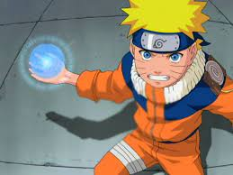

Originally, Naruto was a rather inept ninja, failing to graduate from the Academy three times. Through sheer determination and training however, his skills rapidly improved to defeat strong genin like Neji Hyūga, Gaara, and Kabuto Yakushi, earning acknowledgement from all the Sannin for his potential. Under various tutelage, Naruto was able to defeat various members of Akatsuki, ultimately earning praise from Konohagakure as a Hokage-material hero. Naruto's personally defeated various reincarnated Kage and jinchūriki during the Fourth Shinobi World War, with many believing he was the central key to winning the battle. By adulthood, his prowess made him the Seventh Hokage, regarded as the strongest shinobi in history and having command of overwhelming jutsu. With the combined might of Sasuke Uchiha, noted as his only rival as a shinobi, they are said to be able to destroy a continent. Together, they overpowered Momoshiki Ōtsutsuki who absorbed Kinshiki Ōtsutsuki, and pushed Jigen's body to its limit. Overall, he could compete against if not defeat world-threatening opponents, such as Madara Uchiha, Kaguya Ōtsutsuki, Toneri Ōtsutsuki, and while fighting at his absolute peak overwhelm Isshiki Ōtsutsuki.
 Back